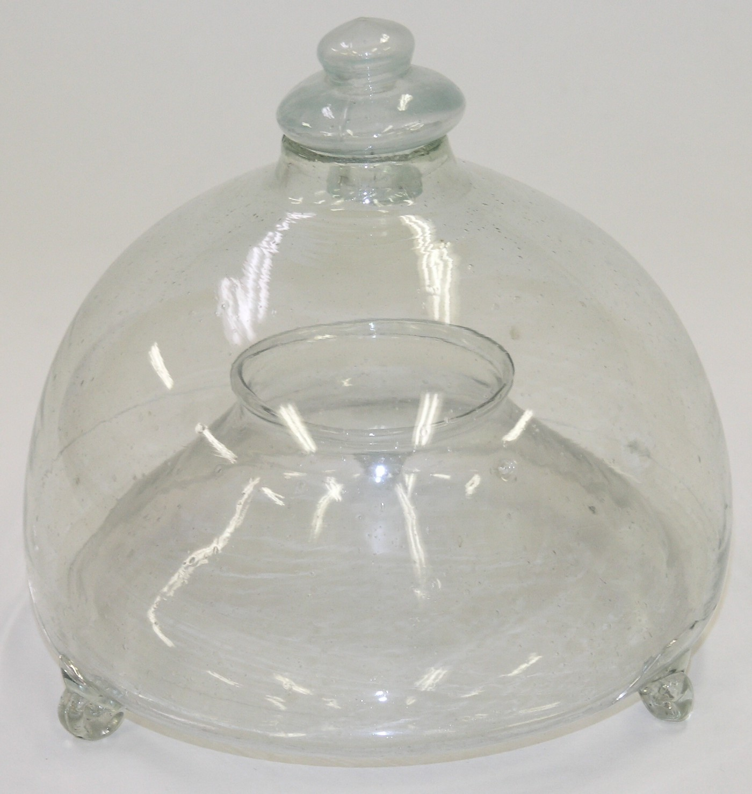
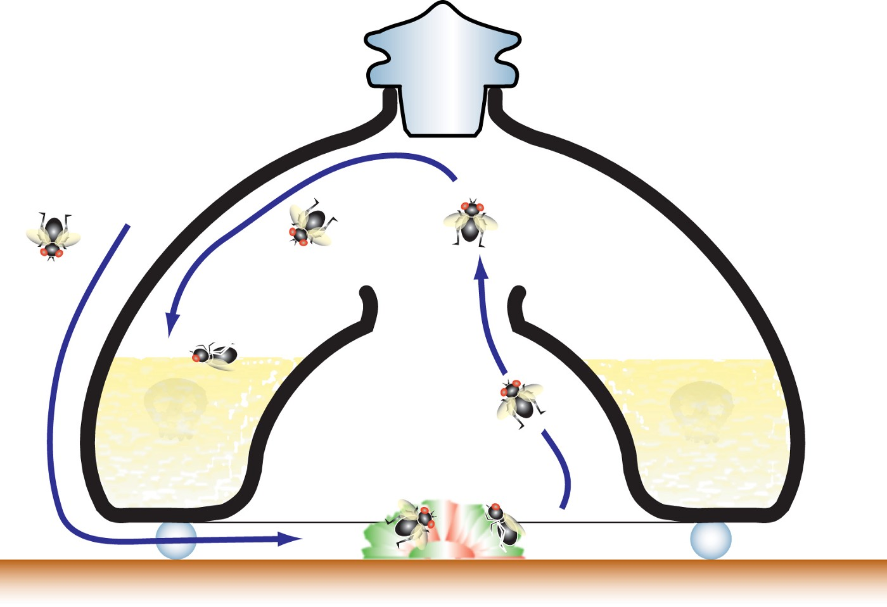
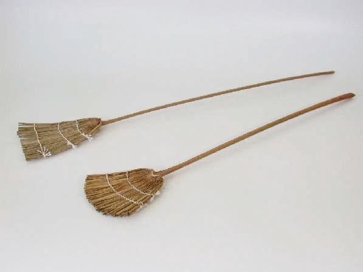
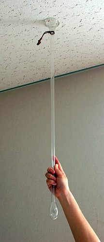
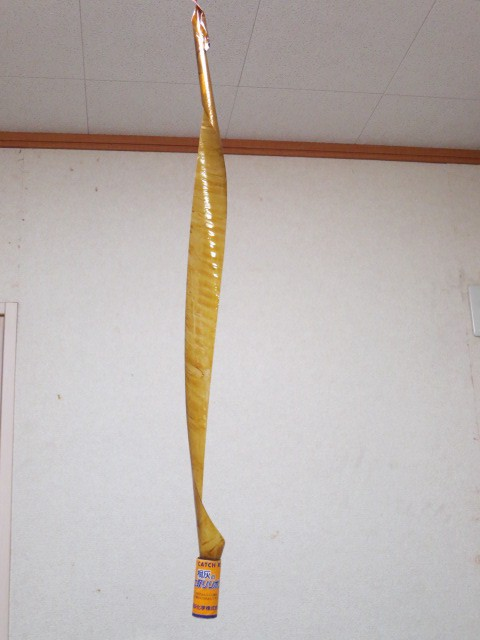

Also tagged Japanese Culture
昭和時代日本人和蒼蠅的戰爭
千
in
今天的阿千也在努力學習
· 5 min read
'The inside of an Oriental store with various types of alcohol” by chuttersnap on Unsplash
日本一直以整潔乾淨的印象聞名，街道上找不到垃圾桶也不見垃圾亂滾，一直都被大家所視為環境整潔的模範生。但即便是這樣的日本，在遙遠的昭和時期也還是經歷過一段和蒼蠅大戰的歷史。
在昭和十年(西元1935)左右的時候，日本還沒有完整的下水道系統，因此家家戶戶的髒水是沿著道路旁的溝渠流走的。另外，在廁所的部分，當時候還是抽取式的，也就是下方是有著化糞池的廁所，衛生狀態實在稱不上是好。另外，當時的垃圾處理方法也不妥當，因此蒼蠅和害蟲就大量的繁衍，甚至造成了傳染病的流行。對當時的人來說，是十分重大的問題。
在這一場和蒼蠅的戰爭之中，有一些武器，是環保動腦派，像是這個：

亀山市歴史博物館所蔵川戸家資料89
「玻璃製捕蠅器（ガラス製ハエ取り器）」
環保腦子派使用的是這一個利用蒼蠅往上飛的特性製作的玻璃器具。 使用方法是：在容器內裝入加了醋、酒和砂糖的水，接著在的容器底部圓洞的下方放一些適合作為誘餌的食物，當蒼蠅們跑來吃東西後，就會因為向上飛的特性而受困玻璃瓶內，最後精疲力竭而死。
也就是說，環保腦子派只需要把水裝好，食物放好，接著就只需要等著收屍就好了。
腦子好就是輕鬆省力啊～

玻璃捕蠅器原理（龜山市歷史博物館解說圖）
另外，這個器具要清理的時候只要把上面的蓋子打開把水倒出來就可以了。收屍都不弄髒手，簡直樂勝。
在東日本大震災的時候，在受災地區作為蒼蠅對策製作使用的寶特瓶捕蠅器，就是用跟這個裝置相同的原理做出來的。
接著第二群人，簡單粗暴派。

蒼蠅拍（ハエたたき）
「蒼蠅拍（ハエたたき）」
簡單粗暴派的重點就是要有超強的視力和敏捷度，來一隻殺一隻，來一對殺一雙，對抗蒼蠅還可以順便發洩情緒，運動強身，是家家戶戶的必備武器。
在昭和時期，雖然也是有金屬製的蒼蠅拍，甚至戰後也出現了塑膠蒼蠅拍，但最被廣泛使用的還是棕梠製的蒼蠅拍。原因是打蒼蠅的時候需要一些比較硬的骨架，又需要重量剛剛好可以進行瞄準給蒼蠅致命一擊，在這些條件之下，棕梠製的蒼蠅拍勝出，使用上非常順手，成為家戶常備的武器。
第三群人：動動腦也動動手派

捕蠅棒（ガラス製ハエ取り)
「捕蠅棒（ガラス製ハエ取り)」
捕蠅棒就是一隻引導蒼蠅通向死胡同的玻璃棒。我覺得這個路線適合不喜歡太過暴力的行動，又想在和蒼蠅的大戰之中有一些存在感，覺得自己有在做事的人。
現在就算看到一隻這種捕蒼蠅棒也完全不會知道它是拿來做什麼的吧。但在昭和時期的日本，這可是很常見的器具呢。
最後一群人：殺敵一百，自損五十路線

捕蠅紙（ハエ取り紙）
「捕蠅紙（ハエ取り紙）」
這是非常簡單粗暴但有效的人蠅大戰陷阱之王。基本上現在上網找ハエ取り紙都還找得到還有在販售的商品，這個武器的邏輯非常簡單，就是在上面塗上會吸引蒼蠅來吃的東西的味道和可以把蒼蠅黏住的膠。蒼蠅們被氣味吸引來了的時候，就會被膠黏住。可以說是最棒的陷阱。
不過為什麼我會稱這個路線是殺敵一百，自損五十路線呢。其實是因為據說日本的房子通常小小的，天花板也不高，所以常常有人會不小心讓頭髮黏到這個捕蠅紙，或者甚至是就黏到了臉上。我想不管是哪一種戰場，都不會有人想要和屍體親密接觸的。光是那個驚駭程度就可以自損半條命了吧。
以上就是昭和時期人蠅大戰的神器們。
有沒有突然覺得昭和時期也不算太遙遠嘛～ 雖然科技一直在進步，但人活著在意的事情卻都還是差不多呢（笑）。
感謝各位閱讀到最後：） 我們下回見：ＤＤ
資料出處： 千葉縣中央博物館
https://www.chiba-muse.or.jp/OTONE/dougu/sumu-33.html
埼玉県入間郡三芳町の町立歴史民俗資料館公式ホームページ
http://www.jade.dti.ne.jp/miyoshir/mingu/mingu95.html#haetori
Write the first response